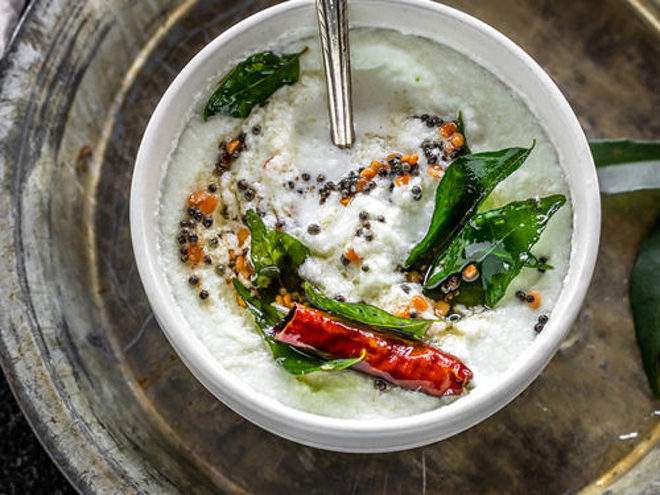

Coconut chutney recipe

Description
Coconut chutney is a very popular south Indian side which goes along very well with a variety of other dishes.
Ingredients
- Shredded/dessicated coconut
- Green chillies
- Red chillies
- Ginger
- Mustard seeds
- Coconut oil
- Curry leaves
- Asaforteida
Steps
- Grind 1 cup of coconut along with 1 inch ginger and 3-4 green chillies and set it aside.
- In a small utensil, heat 1 tablespoon of coconut oil.
- Add 1 teaspoon of mustard seeds and let them cracle.
- Add 3-4 pinches of asaforteida and salt.
- Add red chillies and curry leaves to the oil.
- Carefully pour this hot oil on top of the ground coconut paste made earlier.
- Serve with dosa or idli.